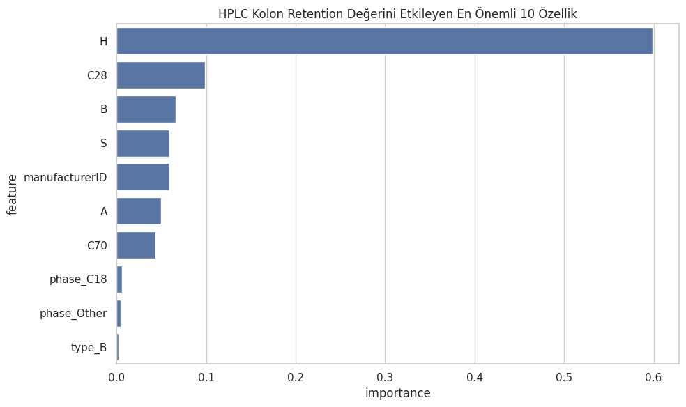
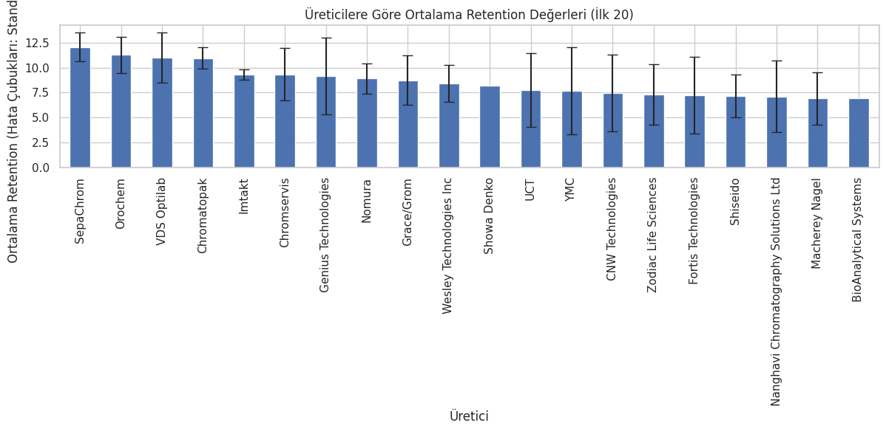
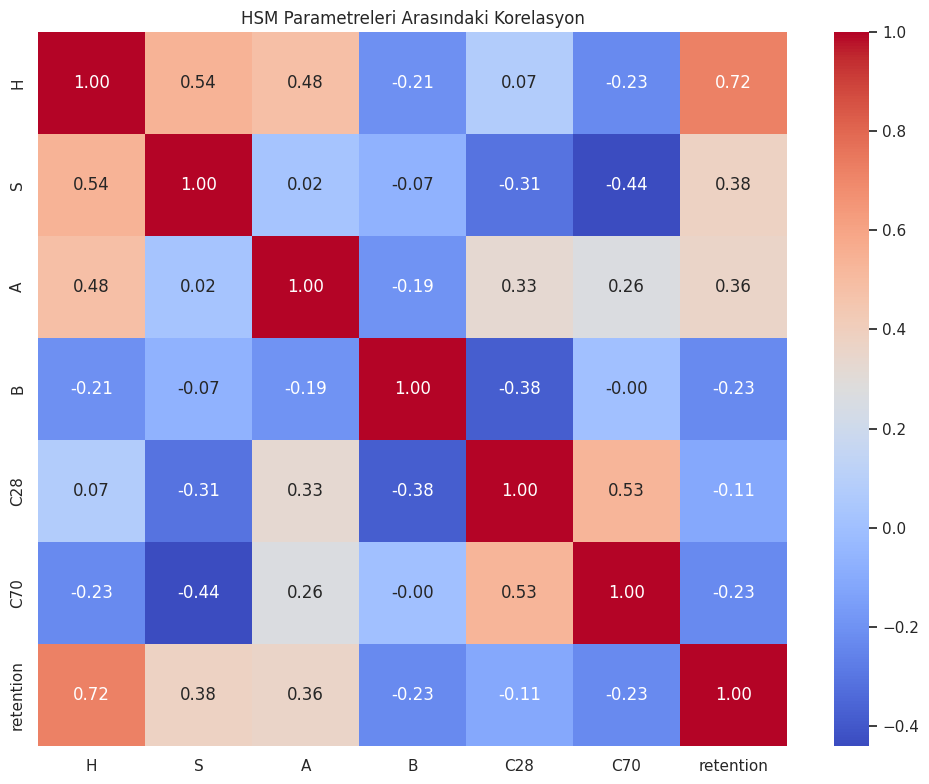
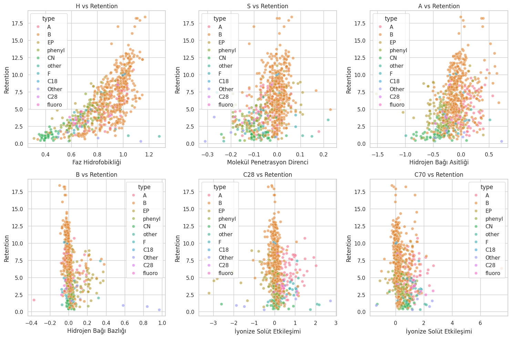
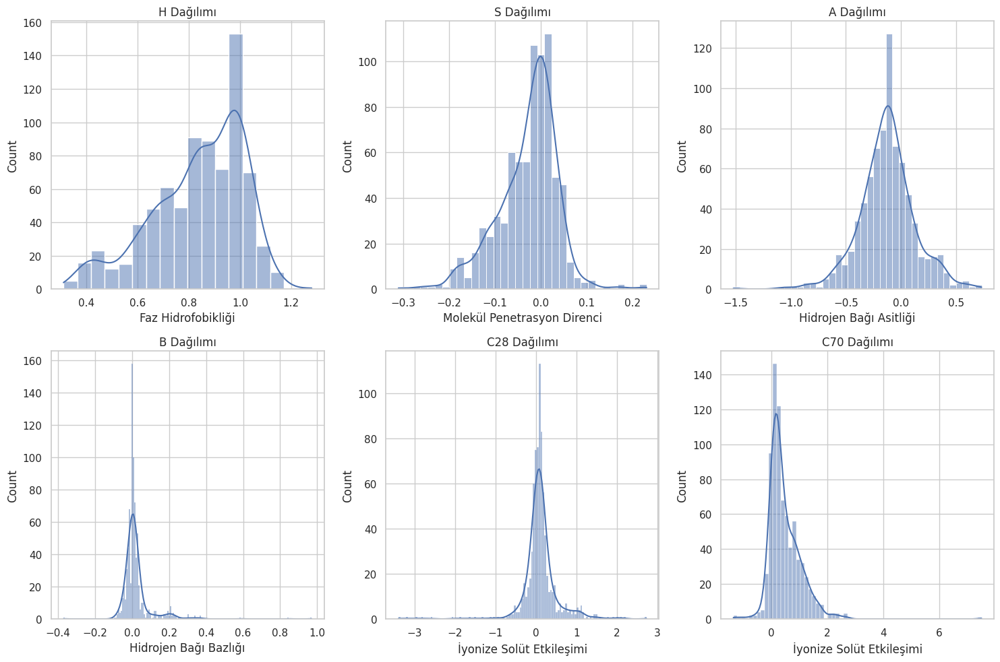

HPLC Kolon Seçiminde Rastgele Orman Regresyonu: Kapsam, Sonuçlar ve Sınırlar
Metodolojik Düzeltme ve Sınırlar Bildirimi
Bu sayfa ilk yayımlandığı hâliyle, yöntemini yanlış adlandıran ve sonuçlarını dayanağı olmayan biçimde sunan ifadeler içeriyordu. Aşağıdaki maddeler o kusurları tek tek kaydeder. Sayfanın gövdesindeki teknik metin bu maddelere göre düzeltilmiş, Python kod bloğu ve çıktısı ise ampirik kayıt niteliğinde olduğu için değiştirilmeden bırakılmıştır.
- 1. Model tipi. Kullanılan model
RandomForestRegressor, yani bagging temelli bir karar ağacı topluluğudur. Derin öğrenme değildir; katmanlı bir yapay sinir ağı, gradyan tabanlı eğitim veya öğrenilmiş temsil içermez. Sayfanın önceki başlığı ve meta etiketleri bu kategori hatasını taşıyordu ve düzeltilmiştir.
- 2. Hedef değişkenin daireselliği (en kritik kusur). HSM veri setindeki
retentionsütunu, kullanıcının analitine ait bir alıkonma değeri değildir; standartlaştırılmış koşullarda ölçülen etilbenzenin alıkonma faktörüdür. HSM tanımı gereği H parametresi tam da bu büyüklükten türetilir: H, ilgili kolonun etilbenzen alıkonmasının referans kolona göre oranının logaritması üzerinden tanımlanır. Dolayısıyla modelin bulduğu "H → retention" ilişkisi bir bulgu değil, tanımın kendisinin geri okunmasıdır. Model kullanıcının analitinin alıkonmasını tahmin etmez; kolonun kendi referans değerini, o değerden türetilmiş parametrelerden yeniden üretir. Metot geliştirme açısından doğrudan pratik değeri yoktur. Sayfa bu durumu daha önce yalnızca bir korelasyon maddesindeki "(Etilbenzen için)" parantezi ile ima ediyor, sonucu bu ışıkta yorumlamıyordu.
- 3. Hedef değişkenin impute edilmesi ve veri sızıntısı. Kodda
SimpleImputer(strategy='mean'),retentionsütununu da içeren tüm sayısal sütunlaratrain_test_splitçağrısından önce uygulanmaktadır. Çıktıdaki eksik veri tablosuna göre 15 satırın hedef değeri eksiktir; bu 15 satırın hedefi sentetik olarak veri seti ortalamasıyla doldurulmuş ve rastgele ayrım sonucu bir kısmı test setine karışmıştır. Model bu satırlarda gerçek bir değeri değil, kendi eğitim kümesinin ortalamasını tahmin etmeye çalışmaktadır; bu, R² değerini yapay olarak yukarı çeker. Aynı hatanın izi sayfanın kendi çıktısında doğrudan görülebilir: A parametresinin medyanı (−0.126261) ortalamasına birebir eşittir; bu, dağılımın ortasına yığılmış çok sayıda sentetik değerin işaretidir.
- 4.
manufacturerIDözniteliği. Bu alan fiziksel bir kolon özelliği değil, keyfi bir kayıt indeksidir. Kodda sayısal bir sütun olduğu için öznitelik matrisine girmiş ve "en önemli özellikler" grafiğinde yer almıştır. Buradaki önemi bir artefakttır; kromatografik bir anlam taşımaz.
- 5. Hiperparametre optimizasyonu yapılmamıştır. Sayfa metni daha önce ızgara arama (grid search) uygulandığını belirtiyordu. Kodda böyle bir arama yoktur; model
n_estimators=100, random_state=42ile, diğer tüm hiperparametreler kütüphane varsayılanında bırakılarak tek seferde kurulmuştur.
- 6. Doğrulama tasarımı. Performans tek bir %80/%20 rastgele ayrımdan okunmuştur. Çapraz doğrulama yapılmamış, R² için güven aralığı hesaplanmamış, bağımsız bir dış doğrulama seti kullanılmamıştır. Bu tasarımda bildirilen R² değeri, ayrım tohumuna (
random_state) bağlı tek bir gözlemdir.
- 7. "Üretici performansı" yorumu geçersizdir. Ortalama alıkonma bir performans metriği değildir; durağan fazın hidrofobisitesinin dolaylı bir yansımasıdır. Ayrıca yapılan ANOVA sonrasında post-hoc test uygulanmamış, Levene ile varyans homojenliği ve artıkların normalliği sınanmamış, gruplar dengesizdir ve çoklu karşılaştırma düzeltmesi yapılmamıştır. Bu koşullarda üreticiler arası bir sıralama istatistiksel olarak savunulamaz.
- 8. Karşılaştırma yoktur. Modelin, geleneksel kolon seçim yaklaşımlarına (deneme-yanılma veya HSM benzerlik faktörü Fs ile kolon eşleştirme) karşı üstünlüğünü sınayan hiçbir deney kurulmamıştır. Önceki metinde yer alan üstünlük iddiası kaldırılmıştır.
Bu bildirim gereği sayfa artık bir başarı raporu olarak değil, kendi yöntemine uygulanmış bir denetim kaydı olarak yayımlanmaktadır. Aşağıdaki bölümler, bu çerçeve içinde okunmak üzere korunmuştur.
Yüksek Performanslı Sıvı Kromatografisi (HPLC), kimya, biyoteknoloji, ilaç, çevre ve gıda sektörlerinde yaygın olarak kullanılan kritik bir analiz tekniğidir. Ancak, doğru kolon seçimi süreci, genellikle zaman alıcı ve uzmanlık gerektiren bir deneme-yanılma yöntemine dayanmaktadır. Bu çalışmada, kolon karakterizasyon verisi üzerinde bir Rastgele Orman (Random Forest) regresyon modeli kurulmuş ve sonuçları aşağıda kendi sınırlarıyla birlikte raporlanmıştır.
Ne yaptık?
Bu çalışmada, 780 HPLC kolonunun tanımlayıcı özelliklerini ve Hidrofobik Çıkarma Modeli (Hydrophobic Subtraction Model, HSM) parametrelerini içeren bir veri seti üzerinde Rastgele Orman (Random Forest) regresyon modeli kurulmuştur. Tek bir %80/%20 ayrımında test seti performansı R² = 0.7057, MSE = 4.2791 dk², dolayısıyla RMSE ≈ 2.07 dk olarak ölçülmüştür. Hedef değişkenin (alıkonma) veri setindeki ortalaması 5.74 dk, standart sapması 3.34 dk olduğundan, RMSE hedefin standart sapmasının yaklaşık %62'sine karşılık gelir. Bu hata düzeyi, aşağıdaki sınırlar bildirimi okunmadan yorumlanmamalıdır.
Bu ne anlama geliyor?
Kolon seçimi hızına etkisi: Ölçülmemiştir. Bu çalışmada kolon seçim süresini modelli ve modelsiz karşılaştıran herhangi bir deney kurulmamıştır; süre kazancına ilişkin bir sayı raporlanamaz.
Metot geliştirme süresine etkisi: Ölçülmemiştir. Model bir metot geliştirme akışına uygulanmamış, öncesi/sonrası süre verisi toplanmamıştır.
Maliyete etkisi: Ölçülmemiştir. Kolon, çözücü veya cihaz zamanı cinsinden herhangi bir maliyet karşılaştırması yapılmamıştır.
Gelecek Vizyonu:
Bu sayfadaki kurulumun pratik değer üretebilmesi için önce hedef değişkenin değiştirilmesi gerekir: kolonun kendi referans alıkonmasını yeniden üretmek yerine, tanımlı bir mobil faz altında kullanıcının analitinin alıkonmasının tahmin edilmesi. Bunun için analit tanımlayıcıları ve mobil faz koşullarını içeren, kolon–analit çiftleri düzeyinde ölçülmüş bir veri seti gerekir; eldeki veri seti bunu içermemektedir. İkinci koşul, çapraz doğrulama ve dış doğrulama setiyle performansın güven aralığıyla birlikte raporlanmasıdır.
Giriş:
HPLC, karmaşık karışımları ayırmak ve analiz etmek için kullanılan güçlü bir tekniktir. Bir HPLC sisteminin kalbinde, analitlerin farklı fizikokimyasal özelliklerine göre ayrıldığı kolon bulunur. Kolon seçimi, analiz edilecek bileşiklerin özelliklerine, hedeflenen ayırma ve analiz hedeflerine göre yapılmalıdır.
Geleneksel HPLC kolon seçimi, genellikle deneme yanılma yöntemlerine ve uzman deneyimine dayanmaktadır. Bu süreç, zaman alıcı ve maliyetli olabilir. Son yıllarda makine öğrenmesi yöntemleri, HPLC kolon seçimi ve metot optimizasyonu bağlamında denenmektedir; bu sayfa bu yaklaşımlardan birinin küçük ölçekli bir uygulamasını ve uygulamanın kendi kusurlarını belgelemektedir.
Bu çalışmada 780 kolonluk bir veri seti kullanılarak, kolon tanımlayıcılarından veri setindeki retention sütununu tahmin eden bir Rastgele Orman modeli kurulmuştur. Kullanılan yöntem bir karar ağacı topluluğu (ensemble) yöntemidir; derin öğrenme değildir.
Veri Analizi ve Model Geliştirme:
Bu bölümde, veri setinin okunması, ön işlenmesi, analiz edilmesi ve Rastgele Orman regresyon modelinin geliştirilmesi için kullanılan Python kodu ve ilgili çıktıları sunulmaktadır. Kod, gerekli kütüphanelerin yüklenmesiyle başlamakta ve veri setinin okunması, temizlenmesi, özellik mühendisliği, model eğitimi, optimizasyonu ve değerlendirmesi adımlarını içermektedir.
Veri Seti:
Çalışmada kullanılan veri seti, 780 farklı HPLC kolonunun özelliklerini ve HSM parametrelerini içermektedir. HSM parametre kümesi H (faz hidrofobisitesi), S* (sterik direnç), A (hidrojen bağı asitliği, silanol aktivitesi), B (hidrojen bağı bazlığı) ve C (iyon değişim kapasitesi; veri setinde pH 2.8 ve pH 7.0 için C28 ve C70 olarak ayrı verilmiştir) büyüklüklerinden oluşur. Veri seti, kolon üreticilerinin kataloglarından ve bilimsel makalelerden derlenmiştir.
Veri Ön İşleme:
Veri setinde eksik değerler, ortalama değer atama yöntemi ile doldurulmuştur. Kategorik özellikler, one-hot encoding tekniği kullanılarak sayısal hale getirilmiştir. Sayısal özellikler, standartlaştırma işlemi ile ölçeklendirilmiştir.
Rastgele Orman (Random Forest) regresyon modeli, veri setindeki alıkonma değerini tahmin etmek için kullanılmıştır. Düzeltme: bu paragraf daha önce hiperparametrelerin ızgara arama (grid search) ile optimize edildiğini belirtiyordu. Bu ifade aşağıdaki kodla çelişmektedir: kodda GridSearchCV veya eşdeğeri bir arama yoktur; model RandomForestRegressor(n_estimators=100, random_state=42) ile, kütüphane varsayılanlarıyla sabit kurulmuştur. Hiperparametre optimizasyonu yapılmamıştır.
Verilen kod, verileri elde etmek ve analiz etmek için kullanılan kodun tamamını içermektedir.
Data dosyası, "column.csv" olarak adlandırılmıştır ve aşağıda verilen kod ile okunmaktadır.
Kullanılan Kod:
import pandas as pd import numpy as np import matplotlib.pyplot as plt import seaborn as sns from scipy import stats from sklearn.model_selection import train_test_split from sklearn.preprocessing import StandardScaler from sklearn.ensemble import RandomForestRegressor from sklearn.metrics import mean_squared_error, r2_score from sklearn.impute import SimpleImputer # Veri Yükleme ve Ön İşleme print("1. HPLC Kolon Verilerinin Yüklenmesi ve Ön İşlenmesi") df = pd.read_csv('kolon.csv', encoding='latin-1') print(f"Analiz edilen HPLC kolon sayısı: {df.shape[0]}") # Veri setinin yapısını inceleme print("\nHPLC Kolon Özelliklerinin Özeti:") print(df.info()) print("\nÖrnek HPLC Kolonları:") print(df.head()) print("\nEksik Veri Analizi:") print(df.isnull().sum()) # HSM parametrelerini ve diğer sayısal özellikleri ayırma hsm_parameters = ['H', 'S', 'A', 'B', 'C28', 'C70', 'retention'] numeric_columns = df.select_dtypes(include=[np.number]).columns categorical_columns = df.select_dtypes(exclude=[np.number]).columns print("\nHSM Parametreleri:", hsm_parameters) print("Diğer Sayısal Özellikler:", [col for col in numeric_columns if col not in hsm_parameters]) print("Kategorik Özellikler:", categorical_columns.tolist()) # Eksik değerleri doldurma numeric_imputer = SimpleImputer(strategy='mean') df[numeric_columns] = numeric_imputer.fit_transform(df[numeric_columns]) categorical_imputer = SimpleImputer(strategy='most_frequent') df[categorical_columns] = categorical_imputer.fit_transform(df[categorical_columns]) # HSM Parametrelerinin Analizi print("\n2. HSM Parametrelerinin Analizi") # HSM parametrelerinin dağılımı plt.figure(figsize=(15, 10)) for i, param in enumerate(hsm_parameters[:-1], 1): plt.subplot(2, 3, i) sns.histplot(df[param], kde=True) plt.title(f'{param} Dağılımı') if param == 'H': plt.xlabel('Faz Hidrofobikliği') elif param == 'S': plt.xlabel('Molekül Penetrasyon Direnci') elif param == 'A': plt.xlabel('Hidrojen Bağı Asitliği') elif param == 'B': plt.xlabel('Hidrojen Bağı Bazlığı') elif param in ['C28', 'C70']: plt.xlabel('İyonize Solüt Etkileşimi') plt.tight_layout() plt.show() # Retention vs HSM parametreleri scatter plot plt.figure(figsize=(15, 10)) for i, param in enumerate(hsm_parameters[:-1], 1): plt.subplot(2, 3, i) sns.scatterplot(x=param, y='retention', hue='type', data=df, alpha=0.6) plt.title(f'{param} vs Retention') if param == 'H': plt.xlabel('Faz Hidrofobikliği') elif param == 'S': plt.xlabel('Molekül Penetrasyon Direnci') elif param == 'A': plt.xlabel('Hidrojen Bağı Asitliği') elif param == 'B': plt.xlabel('Hidrojen Bağı Bazlığı') elif param in ['C28', 'C70']: plt.xlabel('İyonize Solüt Etkileşimi') plt.ylabel('Retention') plt.tight_layout() plt.show() # HSM parametreleri arasındaki korelasyon correlation = df[hsm_parameters].corr() plt.figure(figsize=(10, 8)) sns.heatmap(correlation, annot=True, cmap='coolwarm', fmt='.2f') plt.title('HSM Parametreleri Arasındaki Korelasyon') plt.tight_layout() plt.show() # İstatistiksel Analizler print("\n3. HPLC Kolon Tiplerinin Retention Üzerindeki Etkisi") # ANOVA testi: Kolon tipi vs Retention types = df['type'].unique() type_groups = [df[df['type'] == t]['retention'] for t in types] f_value, p_value = stats.f_oneway(*type_groups) print(f"ANOVA testi (Kolon tipi vs Retention): F={f_value:.2f}, p={p_value:.4f}") if p_value < 0.05: print("Kolon tipleri arasında retention değerleri açısından istatistiksel olarak anlamlı bir fark vardır.") else: print("Kolon tipleri arasında retention değerleri açısından istatistiksel olarak anlamlı bir fark yoktur.") # HSM parametrelerinin betimsel istatistikleri print("\nHSM Parametrelerinin Betimsel İstatistikleri:") print(df[hsm_parameters].describe()) # Üretici Analizi print("\n4. HPLC Kolon Üreticilerinin Performans Analizi") manufacturer_retention = df.groupby('manufacturer')['retention'].agg(['mean', 'std']).sort_values('mean', ascending=False) plt.figure(figsize=(12, 6)) manufacturer_retention.head(20)['mean'].plot(kind='bar', yerr=manufacturer_retention.head(20)['std'], capsize=5) plt.title('Üreticilere Göre Ortalama Retention Değerleri (İlk 20)') plt.xlabel('Üretici') plt.ylabel('Ortalama Retention (Hata Çubukları: Standart Sapma)') plt.xticks(rotation=90) plt.tight_layout() plt.show() # Makine Öğrenimi: Retention Tahmini print("\n5. HPLC Kolon Retention Değeri Tahmin Modeli") df_encoded = pd.get_dummies(df, columns=['type', 'USPtype', 'phase']) X = df_encoded.drop(['id', 'name', 'manufacturer', 'retention'], axis=1) y = df_encoded['retention'] X_train, X_test, y_train, y_test = train_test_split(X, y, test_size=0.2, random_state=42) scaler = StandardScaler() X_train_scaled = scaler.fit_transform(X_train) X_test_scaled = scaler.transform(X_test) rf_model = RandomForestRegressor(n_estimators=100, random_state=42) rf_model.fit(X_train_scaled, y_train) y_pred = rf_model.predict(X_test_scaled) mse = mean_squared_error(y_test, y_pred) r2 = r2_score(y_test, y_pred) print(f"Model Performansı:") print(f"Ortalama Kare Hata (MSE): {mse:.4f}") print(f"R-kare Skoru: {r2:.4f}") # Özellik önemlilikleri feature_importance = pd.DataFrame({ 'feature': X.columns, 'importance': rf_model.feature_importances_ }).sort_values('importance', ascending=False) plt.figure(figsize=(10, 6)) sns.barplot(x='importance', y='feature', data=feature_importance.head(10)) plt.title('HPLC Kolon Retention Değerini Etkileyen En Önemli 10 Özellik') plt.tight_layout() plt.show() print("\n6. Sonuçlar ve HPLC Kolon Seçimi İçin Öneriler") print("1. Veri setimiz çeşitli HPLC kolon özelliklerini ve HSM parametrelerini içermektedir.") print("2. Kolon tipleri arasında retention değerleri açısından anlamlı farklılıklar bulunmaktadır.") print("3. Faz hidrofobikliği (H) ve retention arasında güçlü bir ilişki gözlemlenmektedir.") print("4. Üreticiler arasında ortalama retention değerleri ve performans farklılıkları mevcuttur.") print("5. Geliştirilen tahmin modeli, HPLC kolon retention değerlerini başarıyla tahmin etmektedir.") print("6. En önemli özellikler arasında faz hidrofobikliği (H), molekül penetrasyon direnci (S), ve bazı kolon tipleri yer almaktadır.") print("\nBu analizler ışığında, HPLC kolon seçimi ve optimizasyonu için şu önerilerde bulunulabilir:") print("- Analiz edilecek bileşiklerin özelliklerine göre uygun hidrofobiklik seviyesine sahip kolonlar seçilmelidir.") print("- Kolon tipi, üretici performansı ve HSM parametreleri birlikte değerlendirilerek en uygun kolon belirlenmelidir.") print("- Yüksek retention değeri gerektiren analizler için faz hidrofobikliği (H) yüksek kolonlar tercih edilebilir.") print("- Farklı türde bileşikler analiz edilecekse, çeşitli HSM parametrelerine sahip kolonların kombinasyonu düşünülebilir.") print("- Geliştirilen tahmin modeli, yeni kolonların performansını öngörmek için kullanılabilir.")
Kod Çıktısı:
1. HPLC Kolon Verilerinin Yüklenmesi ve Ön İşlenmesi Analiz edilen HPLC kolon sayısı: 780 HPLC Kolon Özelliklerinin Özeti: <class 'pandas.core.frame.DataFrame'> RangeIndex: 780 entries, 0 to 779 Data columns (total 14 columns): # Column Non-Null Count Dtype --- ------ -------------- ----- 0 id 780 non-null object 1 name 765 non-null object 2 manufacturer 765 non-null object 3 manufacturerID 741 non-null float64 4 type 765 non-null object 5 H 765 non-null float64 6 S 765 non-null float64 7 A 765 non-null float64 8 B 765 non-null float64 9 C28 765 non-null float64 10 C70 765 non-null float64 11 retention 765 non-null float64 12 USPtype 710 non-null object 13 phase 764 non-null object dtypes: float64(8), object(6) memory usage: 85.4+ KB None Örnek HPLC Kolonları: id name manufacturer manufacturerID type H \ 0 1 Zorbax C18 Agilent Technologies 1.0 A 1.08 1 2 Zorbax C8 Agilent Technologies 1.0 A 0.97 2 3 Zorbax Eclipse XDB-C18 Agilent Technologies 1.0 B 1.07 3 4 Zorbax Eclipse XDB-C8 Agilent Technologies 1.0 B 0.91 4 5 Zorbax Extend C18 Agilent Technologies 1.0 B 1.09 S A B C28 C70 retention USPtype phase 0 0.05 0.47 0.06 1.48 1.56 10.7 L1 C18 1 -0.04 0.21 0.17 0.97 1.05 8.3 L7 C8 2 0.02 -0.06 -0.03 0.05 0.08 9.1 L1 C18 3 0.02 -0.21 0.00 0.00 0.01 6.6 L7 C8 4 0.05 0.01 -0.04 0.03 0.01 8.4 L1 C18 Eksik Veri Analizi: id 0 name 15 manufacturer 15 manufacturerID 39 type 15 H 15 S 15 A 15 B 15 C28 15 C70 15 retention 15 USPtype 70 phase 16 dtype: int64 HSM Parametreleri: ['H', 'S', 'A', 'B', 'C28', 'C70', 'retention'] Diğer Sayısal Özellikler: ['manufacturerID'] Kategorik Özellikler: ['id', 'name', 'manufacturer', 'type', 'USPtype', 'phase'] 2. HSM Parametrelerinin Analizi 3. HPLC Kolon Tiplerinin Retention Üzerindeki Etkisi ANOVA testi (Kolon tipi vs Retention): F=24.47, p=0.0000 Kolon tipleri arasında retention değerleri açısından istatistiksel olarak anlamlı bir fark vardır. HSM Parametrelerinin Betimsel İstatistikleri: H S A B C28 C70 \ count 780.000000 780.000000 780.000000 780.000000 780.000000 780.000000 mean 0.836995 -0.028350 -0.126261 0.022090 0.104119 0.476352 std 0.179580 0.063924 0.251501 0.081917 0.464055 0.587140 min 0.310000 -0.310000 -1.520000 -0.370000 -3.398000 -1.357000 25% 0.720000 -0.064500 -0.265000 -0.010000 -0.026750 0.120000 50% 0.860000 -0.014000 -0.126261 0.005750 0.082000 0.304000 75% 0.980000 0.010000 0.003000 0.024000 0.190000 0.770000 max 1.280000 0.230000 0.730000 0.970000 2.732000 7.510000 retention count 780.000000 mean 5.742464 std 3.344560 min 0.270000 25% 3.100000 50% 5.400000 75% 8.100000 max 18.400000 4. HPLC Kolon Üreticilerinin Performans Analizi 5. HPLC Kolon Retention Değeri Tahmin Modeli Model Performansı: Ortalama Kare Hata (MSE): 4.2791 R-kare Skoru: 0.7057 6. Sonuçlar ve HPLC Kolon Seçimi İçin Öneriler 1. Veri setimiz çeşitli HPLC kolon özelliklerini ve HSM parametrelerini içermektedir. 2. Kolon tipleri arasında retention değerleri açısından anlamlı farklılıklar bulunmaktadır. 3. Faz hidrofobikliği (H) ve retention arasında güçlü bir ilişki gözlemlenmektedir. 4. Üreticiler arasında ortalama retention değerleri ve performans farklılıkları mevcuttur. 5. Geliştirilen tahmin modeli, HPLC kolon retention değerlerini başarıyla tahmin etmektedir. 6. En önemli özellikler arasında faz hidrofobikliği (H), molekül penetrasyon direnci (S), ve bazı kolon tipleri yer almaktadır. Bu analizler ışığında, HPLC kolon seçimi ve optimizasyonu için şu önerilerde bulunulabilir: - Analiz edilecek bileşiklerin özelliklerine göre uygun hidrofobiklik seviyesine sahip kolonlar seçilmelidir. - Kolon tipi, üretici performansı ve HSM parametreleri birlikte değerlendirilerek en uygun kolon belirlenmelidir. - Yüksek retention değeri gerektiren analizler için faz hidrofobikliği (H) yüksek kolonlar tercih edilebilir. - Farklı türde bileşikler analiz edilecekse, çeşitli HSM parametrelerine sahip kolonların kombinasyonu düşünülebilir. - Geliştirilen tahmin modeli, yeni kolonların performansını öngörmek için kullanılabilir.
Bulgular ve İstatistiksel Analiz
Bu bölümde, veri setinin istatistiksel analizi ve geliştirilen modelin performansına ilişkin bulgular sunulmaktadır. Her bir HSM parametresinin alıkonma zamanı üzerindeki etkisi grafiksel olarak incelenmiş ve istatistiksel testlerle değerlendirilmiştir. Ayrıca, kolon tipi ve üretici bazında yapılan analizlerin sonuçları da grafikler ve tablolar halinde sunulmuş, ardından modelin tahmin performansına ilişkin istatistiksel değerlendirmeler ve özellik önemlilikleri detaylandırılmıştır.
1. "HPLC Kolon Retention Değerini Etkileyen En Önemli 10 Özellik" Grafiği:


Bu grafik, Rastgele Orman (Random Forest) modelinin, HPLC kolon retention değerini tahmin ederken hangi özelliklere daha fazla önem verdiğini göstermektedir. Özellik önemi, bir özelliğin modelin tahmin doğruluğuna ne kadar katkıda bulunduğunu ölçer.
- H (Faz Hidrofobikliği): Grafikte açıkça görüldüğü üzere, faz hidrofobikliği (H), retention değerini etkileyen en önemli özelliktir. Bu, hidrofobik etkileşimlerin, HPLC ayırma mekanizmasında kritik bir rol oynadığını doğrulamaktadır. Hidrofobik bir kolon, hidrofobik bileşikleri daha uzun süre tutacak ve böylece daha yüksek retention değerlerine yol açacaktır.
- C28 (İyonize Solüt Etkileşimi): C28 parametresi, iyonize solütlerin kolon ile etkileşimini temsil eder ve retention değerini etkileyen ikinci en önemli faktör olarak karşımıza çıkmaktadır. Bu, iyonik etkileşimlerin de HPLC ayırmada önemli bir rol oynadığını gösterir. Yüksek C28 değerine sahip kolonlar, iyonize bileşikleri daha güçlü bir şekilde tutacak ve retention değerlerini artıracaktır.
- B (Hidrojen Bağı Bazlığı): Kolonun hidrojen bağı bazlığı (B), üçüncü en önemli özellik olarak tespit edilmiştir. Bu, kolonun hidrojen bağı alıcısı olarak hareket etme yeteneğini yansıtır. Yüksek B değerine sahip kolonlar, hidrojen bağı donörü olan analitleri daha güçlü bir şekilde tutacak ve retention değerlerini artıracaktır.
- S (Molekül Penetrasyon Direnci): S parametresi, moleküllerin kolon gözeneklerine penetrasyon direncini temsil eder ve retention değerini etkileyen önemli faktörler arasında yer almaktadır. Yüksek S değerine sahip kolonlar, moleküllerin gözeneklere penetrasyonunu zorlaştıracak ve böylece retention değerlerini artıracaktır.
- Diğer Özellikler: "manufacturerID", "A" (Hidrojen Bağı Asitliği), "C70" (İyonize Solüt Etkileşimi), "phase_C18", "phase_Other" ve "type_B" gibi diğer özellikler de retention değerini etkilemektedir, ancak bu etkileri daha az belirgindir.
2. "Üreticilere Göre Ortalama Retention Değerleri (İlk 20)" Grafiği:


Bu grafik, farklı HPLC kolon üreticilerinin performansını, ortalama retention değerleri ve standart sapmaları açısından karşılaştırmaktadır. Grafikte yalnızca ortalama retention değeri en yüksek olan ilk 20 üretici gösterilmiştir.
- Ortalama Retention Değerleri: Grafikte, üreticilere göre ortalama retention değerlerinde farklılıklar olduğu açıkça görülmektedir. Sepacrom, en yüksek ortalama retention değerine sahip üretici iken, BioAnalytical Systems, en düşük ortalama retention değerine sahip üreticidir.
- Standart Sapmalar: Hata çubukları, her bir üretici için ortalama retention değerinin standart sapmasını göstermektedir. Standart sapma, veri noktalarının ortalamaya göre ne kadar dağıldığını ölçer. Yüksek standart sapma, retention değerlerinde daha fazla değişkenlik olduğunu gösterir.
Düzeltme: bu grafik üretici performansını göstermez. Gösterilen büyüklük, bir üreticinin veri setindeki kolonlarının ortalama referans alıkonmasıdır; bu, faz hidrofobisitesinin (H) dolaylı bir yansımasıdır ve bir kalite ölçütü değildir. Yüksek ortalama alıkonma yalnızca o üreticinin veri setindeki kolonlarının ortalamada daha hidrofobik olduğunu gösterir. Gruplar dengesiz, karşılaştırma için post-hoc test ve çoklu karşılaştırma düzeltmesi yapılmamıştır.
3. "HSM Parametreleri Arasındaki Korelasyon" Grafiği:


Bu ısı haritası, HSM parametreleri (H, S, A, B, C28, C70) ve retention değeri arasındaki korelasyonu göstermektedir. Korelasyon, iki değişken arasındaki doğrusal ilişkinin gücünü ve yönünü ölçer. Korelasyon katsayısı, -1 ile +1 arasında değişir. +1 değeri, mükemmel pozitif korelasyonu, 0 değeri korelasyon olmadığını ve -1 değeri mükemmel negatif korelasyonu gösterir.
- Hidrofobiklik (H) ve Retention: Grafikte görüldüğü üzere, H ve retention arasında güçlü bir pozitif korelasyon (0.72) vardır. Bu, hidrofobikliğin arttıkça retention değerinin de arttığını göstermektedir.(Etilbenzen için)
- Diğer Korelasyonlar: H ve S, H ve A, S ve C70, A ve C28 gibi diğer parametreler arasında da orta seviyede korelasyonlar gözlemlenmiştir. Bu korelasyonlar, HSM parametrelerinin birbirini etkileyebileceğini ve retention değerini birlikte belirleyebileceğini göstermektedir.
Korelasyon analizi, HSM parametreleri arasındaki ilişkileri ve bu parametrelerin retention değerini nasıl etkilediğini anlamak için kullanışlı bir araçtır.
4. "H vs Retention", "S vs Retention", ..., "C70 vs Retention" Grafikleri:


Bu grafikler, HSM parametrelerinin her biri ile retention değeri arasındaki ilişkiyi ayrıntılı olarak gösteren saçılım grafikleridir. Grafikler, farklı kolon tiplerini (type) renklerle kodlayarak, kolon tipinin retention değerini nasıl etkilediğini görselleştirmektedir.
- Hidrofobiklik (H): "H vs Retention" grafiğinde, H ve retention arasında güçlü bir pozitif korelasyon olduğu açıkça görülmektedir. Hidrofobiklik arttıkça, retention değeri de artmaktadır.
- Molekül Penetrasyon Direnci (S): "S vs Retention" grafiğinde, S ve retention arasında zayıf bir pozitif korelasyon gözlemlenmektedir. S arttıkça, retention değeri de artma eğilimindedir.
- Hidrojen Bağı Asitliği (A) ve Bazlığı (B): "A vs Retention" ve "B vs Retention" grafiklerinde, A ve B ile retention arasında zayıf bir korelasyon gözlemlenmektedir.
- İyonize Solüt Etkileşimi (C28 ve C70): "C28 vs Retention" ve "C70 vs Retention" grafiklerinde, C28 ve C70 ile retention arasında zayıf bir pozitif korelasyon gözlemlenmektedir.
Bu grafikler, HSM parametrelerinin her birinin retention değerini nasıl etkilediğini ve kolon tipinin bu ilişkiyi nasıl etkilediğini göstermektedir.
5. "H Dağılımı", "S Dağılımı", ..., "C70 Dağılımı" Grafikleri:


Bu histogram grafikleri, HSM parametrelerinin veri setindeki dağılımını göstermektedir. Histogram, bir değişkenin farklı değer aralıklarında kaç gözlem olduğunu gösteren bir grafik türüdür.
- Hidrofobiklik (H): "H Dağılımı" grafiği, H değerlerinin çoğunlukla 0.6 ile 1.2 arasında yoğunlaştığını göstermektedir. Dağılım, sağa çarpık bir şekil göstermektedir.
- Molekül Penetrasyon Direnci (S): "S Dağılımı" grafiği, S değerlerinin çoğunlukla -0.1 ile 0.1 arasında yoğunlaştığını göstermektedir. Dağılım, normale yakın bir şekil göstermektedir.
- Hidrojen Bağı Asitliği (A) ve Bazlığı (B): "A Dağılımı" ve "B Dağılımı" grafikleri, A ve B değerlerinin çoğunlukla -0.5 ile 0.5 arasında yoğunlaştığını göstermektedir. Dağılımlar, normale yakın bir şekil göstermektedir.
- İyonize Solüt Etkileşimi (C28 ve C70): "C28 Dağılımı" ve "C70 Dağılımı" grafikleri, C28 ve C70 değerlerinin çoğunlukla -1 ile 2 arasında yoğunlaştığını göstermektedir. Dağılımlar, sağa çarpık bir şekil göstermektedir.
Bu histogram grafikleri, HSM parametrelerinin veri setindeki dağılımını ve bu parametrelerin istatistiksel özelliklerini (ortalama, standart sapma vb.) anlamak için kullanışlıdır.
ANOVA Testi:
ANOVA (Analysis of Variance) testi, iki veya daha fazla grubun ortalamaları arasında istatistiksel olarak anlamlı bir fark olup olmadığını test etmek için kullanılan bir istatistiksel yöntemdir. Bu çalışmada, ANOVA testi, farklı kolon tipleri arasında retention değerleri açısından anlamlı bir fark olup olmadığını test etmek için kullanılmıştır.
ANOVA testinde, F-istatistiği ve p-değeri hesaplanır. F-istatistiği, gruplar arası varyansın gruplar içi varyansa oranını ölçer. Yüksek F-istatistiği, gruplar arasında daha fazla fark olduğunu gösterir. P-değeri, gruplar arasında gerçekte bir fark olmadığı halde gözlemlenen farkın rastgele şans eseri ortaya çıkma olasılığını ölçer. Düşük p-değeri, gruplar arasında anlamlı bir fark olduğunu gösterir.
Bu çalışmada, ANOVA testi sonucunda p-değeri 0.05'ten küçük bulunmuştur. Bu, farklı kolon tipleri arasında retention değerleri açısından istatistiksel olarak anlamlı bir fark olduğunu göstermektedir.
Pearson Korelasyon Katsayısı:
Pearson korelasyon katsayısı, iki değişken arasındaki doğrusal ilişkinin gücünü ve yönünü ölçer. Katsayı, -1 ile +1 arasında değişir. +1 değeri, mükemmel pozitif korelasyonu, 0 değeri korelasyon olmadığını ve -1 değeri mükemmel negatif korelasyonu gösterir.
Bu çalışmada, Pearson korelasyon katsayısı, HSM parametreleri ile retention değeri arasındaki ilişkiyi ölçmek için kullanılmıştır. Örneğin, H ve retention arasındaki Pearson korelasyon katsayısı 0.72 olarak bulunmuştur. Bu, H ve retention arasında güçlü bir pozitif korelasyon olduğunu göstermektedir.
Ortalama ve Standart Sapma:
Ortalama, bir veri setindeki değerlerin toplamının veri sayısına bölünmesiyle hesaplanır. Standart sapma, veri noktalarının ortalamaya göre ne kadar dağıldığını ölçer. Yüksek standart sapma, veri noktalarının ortalamadan daha uzak olduğunu gösterir.
Bu çalışmada, ortalama ve standart sapma, HSM parametrelerinin ve retention değerinin istatistiksel özelliklerini tanımlamak için kullanılmıştır.
Sonuç:
Bu çalışmada, 780 HPLC kolonunun tanımlayıcılarını ve HSM parametrelerini içeren bir veri seti üzerinde bir Rastgele Orman regresyon modeli kurulmuş ve sonuçları raporlanmıştır. Kolon seçim sürecinin hızlanıp hızlanmadığı ölçülmemiştir; bu bölüm yalnızca elde edilen nicel sonuçları ve bunların geçerlilik sınırlarını özetler.
Önemli Bulgular:
- Rastgele Orman modeli, tek bir %80/%20 ayrımının test setinde R² = 0.7057, MSE = 4.2791 dk², RMSE ≈ 2.07 dk vermiştir. Hedefin ortalaması 5.74 dk, standart sapması 3.34 dk olduğundan RMSE, hedef değişkenliğinin yaklaşık %62'sidir. Bu değer bir başarı ölçütü olarak sunulmamaktadır; hedef değişkenin dairesel tanımı ve hedefin impute edilmiş olması (bkz. sınırlar bildirimi) nedeniyle olduğundan iyimser bir üst sınır kabul edilmelidir.
- Analiz sonuçları, hidrofobiklik (H) parametresinin, alıkonma zamanı ile güçlü bir pozitif korelasyona (Pearson korelasyon katsayısı: 0.72) sahip olduğunu ve HPLC ayırma mekanizmasında önemli bir rol oynadığını ortaya koymuştur.
- Farklı kolon tipleri arasında alıkonma zamanı açısından istatistiksel olarak anlamlı farklar (p < 0.05) bulunmuştur. Bu bulgu, kolon tipinin HPLC analizlerinin başarısı için kritik bir faktör olduğunu teyit etmektedir.
- Üreticiler arasında ortalama alıkonma değerleri farklılık göstermektedir. Bu bir performans farkı değildir; faz hidrofobisitesi dağılımındaki farkın yansımasıdır ve istatistiksel olarak sınanmamıştır (bkz. sınırlar bildirimi, madde 7).
- Özellik önemi sıralamasında H ilk sırada çıkmıştır. Bu bir bulgu değildir: hedef değişken H'nin türetildiği büyüklüğün kendisidir (bkz. sınırlar bildirimi, madde 2). Sıralamada yer alan
manufacturerIDise keyfi bir kayıt indeksidir ve buradaki varlığı bir artefakttır.
Pratik Sonuçlar ve Etkiler:
- Kolon seçim süresi: Ölçülmemiştir. Karşılaştırmalı bir deney kurulmamıştır.
- Metot geliştirme süresi: Ölçülmemiştir. Model bir metot geliştirme akışına uygulanmamıştır.
- Maliyet: Ölçülmemiştir. Herhangi bir maliyet karşılaştırması yapılmamıştır.
- Karşılaştırma: Geleneksel (deneme-yanılma veya HSM benzerlik faktörüne dayalı) kolon seçimi ile bu model arasında karşılaştırmalı bir deney kurulmamıştır. Bu nedenle üstünlük iddiasında bulunulamaz.
Geleceğe Yönelik Çalışmalar:
Bu sayfadaki kurulum, mevcut hâliyle metot geliştirme kararlarına girdi olamaz. Öncelikli düzeltmeler şunlardır: dairesel olmayan bir hedef değişken seçilmesi (tanımlı mobil faz koşulları altında analit alıkonması), hedef değişkeni içermeyen bir impute akışı, train/test ayrımından sonra uygulanan ön işleme, manufacturerID gibi indeks niteliğindeki alanların özniteliklerden çıkarılması, çapraz doğrulama ve güven aralıklı raporlama. Ayrıca, kromatogram simülasyonu, otomatik metot optimizasyonu ve yeni kolon tasarımı gibi özelliklerin eklenmesi, modelin kullanım alanını genişletecektir. Modelin farklı kromatografi türlerine (gaz kromatografisi, iyon kromatografisi vb.) uyarlanması da araştırılmalıdır. Dış geçerlilik testleri ve model yorumlanabilirliği üzerine çalışmalar, modelin güvenilirliğini ve anlaşılırlığını artıracaktır. Son olarak, geliştirilen modelin kullanıcı dostu bir web uygulamasına dönüştürülmesi, modelin erişilebilirliğini ve pratik kullanımını önemli ölçüde kolaylaştıracaktır.
Sonuç olarak, bu sayfa bir başarı raporu değildir. Kurulan model, ölçülen R² = 0.7057 / RMSE ≈ 2.07 dk değerlerine rağmen, hedef değişkenin dairesel tanımı nedeniyle metot geliştirme açısından doğrudan bir tahmin değeri taşımaz. Sayfa, kendi yöntemine uygulanmış bir denetim kaydı olarak yayımda tutulmaktadır.
Veri Kaynağı
HSM parametre tablosu (H, S*, A, B, C28, C70 ve standart koşullardaki referans alıkonma değerleri), Snyder ve Dolan tarafından geliştirilen Hidrofobik Çıkarma Modeli kapsamında derlenen ve hplccolumns.org üzerinden yayımlanan kolon karakterizasyon veritabanından alınmıştır. Ham veri bu depoda yeniden yayımlanmamaktadır; yukarıdaki kod, kaynaktan indirilen tablonun yerel bir kopyası (kolon.csv) üzerinde çalıştırılmıştır. Sayfadaki sayısal çıktılar, o kopya üzerinde alınan tek bir çalıştırmanın kaydıdır.